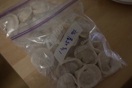
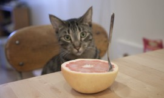
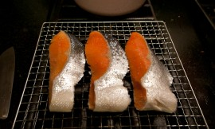

스윙일기
여기저기 써놓았던 스윙일기를 찾았다. 1.지난 수업 린디합 수업에서 종종 팔에 텐션이 약해 리드하기가 힘들다는 지적을 받았다. 그리고 텐션이 좋더라도 내가 리더를 따르지 않고 먼저 움직이는 몹쓸 습관을 지니고 있었다는 것을 알았다. 난 이게 왜 이렇게 힘들지?눈을 감고 리더에게 몸을 완전히 맡기고 춤을 추면 고쳐진다는 선생님의 조언이 있었다. 아 팔로워의 비애… 2.솔로 [...]April 19, 2014 /

이미지 없는 삶
1. 비교적 따뜻한 올해 겨울, 하루하루는, 초조하지 않게 살기 위한 나의 노력으로 언제나 초조하다. 비유하자면 ‘방이 엉망진창이 되지 않기 위해 계획적으로 어지른 후 재빠르게 정리하는 것을 반복하는 식’으로의 생활. 만족스럽다. 이것을 누구에게 이야기할 때 장황해지고, 허공에 제스쳐가 많아지고, 뜬구름 잡는 투의 말을 하게 되는 것만 뺀다면 무리 없이 살고 있다고 [...]December 10, 2013 /

Bits of my Korea trip
한국에서의 팔도 맛 기행을 그리던 나의 꿈은 남편의 바뀐 일정에 따라 산산조각이 났다.September 18, 2013 /

I’m back
I’m back! There would be more updates on recent photos. We moved to Boerum Hill in June. So far, good neighborhood, good vibes. I’m feeling out of sync with everyone, everything right now. It’s natural for me to have fluctuations in mood from time to time, I wonder what if it’s something that’s [...]July 5, 2013 /
I’m back
I’m back! There would be more updates on recent photos. We moved to Boerum Hill in June. So far, good neighborhood, good vibes. I’m feeling out of sync with everyone, everything right now. It’s natural for me to have fluctuations in mood from time to time, I wonder what if it’s something that’s [...]July 5, 2013 /


일곱 날의 해
해가 뜨면 세상 어느 곳도 부럽지 않을 정도로 아름답지만 해가 사라지면 그 빛나는 도시는 사라지고 우중충한 회색빛이 된다. 날씨에 따라 도시 이미지가 극과 극으로 변하는 이곳의 팔월 셋째 주 날씨 예보는 대부분 노란 태양이다. 운도 좋지. 여행을 왔다고는 하지만 여행의 기분은 아니다. 혼자 여행을 왔다고 생각하면 금세 우울해지고 약해진다. 서른 [...]August 11, 2012 /

6월 어느 날 갑자기 다녀온 서울 여행
두 달 전, 잠시 한국에 다녀왔다.남편이 일이 생겨 가야하는 것인데 고맙게도 나도 함께 가자고 해주어서 다녀온 한국은 공기도, 하늘도, 사람들도 똑같았다. 다만 내 그리움이 배가 되었을 뿐. 울릉도 홍합 밥, 따개비 밥 등을 잘하는 집이 있다고 해서 인천 공항에서 내리자마자 곧바로 파주의 한 식당으로 향했다. 오자마자 입이 호강이다.밑반찬은 특별할 것 [...]August 3, 2012 /
6월 어느 날 갑자기 다녀온 서울 여행
두 달 전, 잠시 한국에 다녀왔다.남편이 일이 생겨 가야하는 것인데 고맙게도 나도 함께 가자고 해주어서 다녀온 한국은 공기도, 하늘도, 사람들도 똑같았다. 다만 내 그리움이 배가 되었을 뿐. 울릉도 홍합 밥, 따개비 밥 등을 잘하는 집이 있다고 해서 인천 공항에서 내리자마자 곧바로 파주의 한 식당으로 향했다. 오자마자 입이 호강이다.밑반찬은 특별할 것 [...]August 3, 2012 /

Some things
Endless spring semester is finally done and I am slowly becoming a sloth. Or a jellyfish, maybe?One of those creatures looks always loose.I have been thinking a lot about how I would like to spend my last summer break in my life, though it will be mostly thinking and reading [...]May 3, 2012 /
Some things
Endless spring semester is finally done and I am slowly becoming a sloth. Or a jellyfish, maybe?One of those creatures looks always loose.I have been thinking a lot about how I would like to spend my last summer break in my life, though it will be mostly thinking and reading [...]May 3, 2012 /

먹는 이야기
얼마 전 근처 가게에서 호기심에 샀던 흰색 가지를 구워 간장 양념을 곁들여 먹었다. 아티초크는 아직 못 먹고 냉장고의 작은 비닐 안에서 미라처럼 말라가고 있고, 까놓은 마늘을 넣은 유리병은 아직도 뚜껑을 못 찾고 먼지를 먹으며 식탁 위에 있다.April 17, 2012 /


바쁜 일이 다 끝났다! 했더니 새해는 시작되었고 방학은 끝이 나고 봄 학기 시작. 지난해 마지막 날은, 구실만 있으면 모여서 시끄럽게 파티하고 노는 위층의 정신 나간 이십 대 이웃 여자애들의 비명에 가까운 환호와 함께 조용히(?) 집에서 보냈다. 이번 겨울은 길기도 참 길다. 요사이 맛 들린 ‘만두 빚기’에 계속 몰두하며 봄이 오길 [...]
February 12, 2012 /
For my cat
진도를 빼지 못하고 같은 자리만 빙빙 도는 11월. 마음에 드는 것이 하나도 없네.당장 우리 고양이 배낭에 넣고 아일랜드로 떠나 저 찌르레기떼를 같이 보고 돌아오면 우렁각시가 모든 일을 다 마무리시켜주지 않을까…November 11, 2011 /
For my cat
진도를 빼지 못하고 같은 자리만 빙빙 도는 11월. 마음에 드는 것이 하나도 없네.당장 우리 고양이 배낭에 넣고 아일랜드로 떠나 저 찌르레기떼를 같이 보고 돌아오면 우렁각시가 모든 일을 다 마무리시켜주지 않을까…November 11, 2011 /
추워요
제법 날씨가 쌀쌀해져 가더니 벌써 스웨터와 코트를 입어도 이상하지 않을 날씨가 되어버렸다. 여름이 가버린것에 적응하기도 전에, 또 금새 이렇게 되었다. 야속하기도 하지. 야속하기도 야속하다지만, 사실 일단 내가 피로하다. 주변사람들에게 종이로 만든 몸이라고 놀림을 당하는 나로서는, 추워서 몸을 있는 힘껏 웅크리고 다니다가 -그냥 웅크리는 것에 모든 근육의 힘을 다 써버리고- 집에 [...]October 27, 2011 /

What we ate last week, with curious Moony
Sometimes I wonder if my cat sees me as a cat, and I also suppose he might think me as a mother cat. Some people say that cats think they are human, but nobody knows exactly what this cat creature thinks. Roon once said that cats must be aliens. Moony always [...]October 27, 2011 /
What we ate last week, with curious Moony
Sometimes I wonder if my cat sees me as a cat, and I also suppose he might think me as a mother cat. Some people say that cats think they are human, but nobody knows exactly what this cat creature thinks. Roon once said that cats must be aliens. Moony always [...]October 27, 2011 /
심리적으로, 육체적으로
바쁘다.지난 2주 동안 너무 바빴고, 지난 주말은 또 그동안 바쁜 것을 몰아 쉬고/자고 하느라 바빴고, 이번 주도 지난주와 다르지 않다. 몇 년 동안 쉴 새 없이 바쁘게 살아온 남편을 보면서 어째 저렇게 세상 일 모두 다 혼자 지고 사는 것처럼 바쁜가 했던 적이 있었다. 하지만 이제는 그도 바쁘고 나도 바쁘니까, [...]October 18, 2011 /
심리적으로, 육체적으로
바쁘다.지난 2주 동안 너무 바빴고, 지난 주말은 또 그동안 바쁜 것을 몰아 쉬고/자고 하느라 바빴고, 이번 주도 지난주와 다르지 않다. 몇 년 동안 쉴 새 없이 바쁘게 살아온 남편을 보면서 어째 저렇게 세상 일 모두 다 혼자 지고 사는 것처럼 바쁜가 했던 적이 있었다. 하지만 이제는 그도 바쁘고 나도 바쁘니까, [...]October 18, 2011 /
추석 흉내
아직 지난 여름 방학의 생활 습관에서 빠져나오지 못 한 채 가을 학기의 첫주를 보내고 읽어야 할 책 리스트에 여섯 권 정도를 또 추가하고 나니 주말이 되었다. 그렇지 않아도 달팽이 기어가는 속도로 느리게 책을 읽는 나를 학교가 이렇게 함부로 대접해도 되는지에 대해 곰곰이 생각해보다가 다가오는 추석에 송편을 만들어 먹겠다던 내 철없는 [...]September 11, 2011 /
Recently
I’ve been thinking about things that I had sworn to myself I would never let me forget, things I thought I won’t ever be sorry for, and things I wished I would never believe. I just thought about them today.September 2, 2011 /
Book excerpts, the last couple of weeks
I decided to post some notes that I took from books I’ve been reading these days so that I understand what works for me, what doesn’t. [...]우리도 해방 후 미국식으로 사는 게 문명적인 방식이었으니까 아무 저항없이 따라가버렸잖아요. –김종철, 녹색평론 제111호 ‘먹고 입고만 하는 것이 사람이 아니라 배우고 알아야 사람이에요. 당신댁처럼 영감 [...]August 31, 2011 /
Book excerpts, the last couple of weeks
I decided to post some notes that I took from books I’ve been reading these days so that I understand what works for me, what doesn’t. [...]우리도 해방 후 미국식으로 사는 게 문명적인 방식이었으니까 아무 저항없이 따라가버렸잖아요. –김종철, 녹색평론 제111호 ‘먹고 입고만 하는 것이 사람이 아니라 배우고 알아야 사람이에요. 당신댁처럼 영감 [...]August 31, 2011 /
한국으로부터
영주권 신청하느라 필요한 서류 몇 개를 한국에서 부탁했더니, 귀여운 편지와 작은 선물이 함께 왔다. 이 안에는 지은이가 일본에서 사온 붕어빵 모양 수저받침이 들어있었다.나랑 함께 아침에 장을 보러 나갔을 때 집 앞에서 본 나팔꽃이 생각나 샀다는 엽서.참 곱구나.특히 연기 나는 모기향이 지은이랑 닮았다.폐차안내 봉투 안에 서류를 넣어 주신, 언제나 실용적이신, 멋있는 [...]August 30, 2011 /

Rainy day, please stay
I love rainy summer days. The smell of dust in the rain makes me feel like I’m in somewhere else that I’ve never been to, even if I’m sitting on the same old couch beside a window in my apartment.August 15, 2011 /
Rainy day, please stay
I love rainy summer days. The smell of dust in the rain makes me feel like I’m in somewhere else that I’ve never been to, even if I’m sitting on the same old couch beside a window in my apartment.August 15, 2011 /
소일거리
목욕하면서 진도가 잘 나가지 않는 책을 읽는 둥 마는 둥 하며 온통 물로 적셔놓는다든가, 부엌 식탁 의자와 의자 사이에 널어놓은 침대보 안에 들어가 낮잠을 자는 무늬를 툭툭 건드려 깨워보며 시간을 허비하고 싶은 월요일. 볕이 잘 드는 창 옆 소파에 앉아서 에어컨으로 몸을 식히면서 어제 한입 크기로 잘라놓은 수박을 냉장고에서 꺼내 [...]August 13, 2011 /

언제나
어려서부터 어지간히 동생과 애틋했다.부모님은 아침에 나가서 밤이 늦어서야 들어오셨으니까 정말 우리 둘밖에 없었고, 그래서 더 정다웠다. 서울에서 결혼식을 하고 미국으로 돌아오면서, 7월에 동생이 뉴욕에 와서 지내는 동안 가능한 유난떨지 말고 자연스럽게 평소처럼 보내야겠다고 생각했다. 예를 들면, 해 질 녘에 맥주 몇 캔 가지고 옥상에 올라가서 수다를 떨거나, 각자 볼일을 보고 만나 [...]August 6, 2011 /
여름 밤의 욕망
밤이다.유독 잠이 오질 않는 밤이다. 이루지 못하고 지나버린 내 사사로운 과거의 욕망들과, 앞으로 채워야할 그리고 채우고 싶은 또는 채워야만 하도록 등 떠밀려진 사회적/정치적 욕망들, 그리고 한때 내가 좋아하고 많은것을 나누었던 사람들이지만 지금은 남이 될수 밖에 없었던 사람들, 이 모든 것이 한꺼번에 머리속을 복잡하게 하니 잠을 잘 수가 없다. ‘모든 것이 [...]July 22, 2011 /

3인분의 식사를 준비하는 기분
매일 2인분의 식탁을 준비하다가 한 명 분을 더 만들게 되니까 뭔가 엄마의 마음이 된 것 같은 기분이 들었다. 두 명이 먹다가 세 명이 함께 먹으니까 잘 설명할 수 없는 느낌도 들었는데, 이제 와서 생각해보니 아마도 이게 가족과 함께 식사하는 느낌일지도 모르겠다고 생각했다.July 5, 2011 /